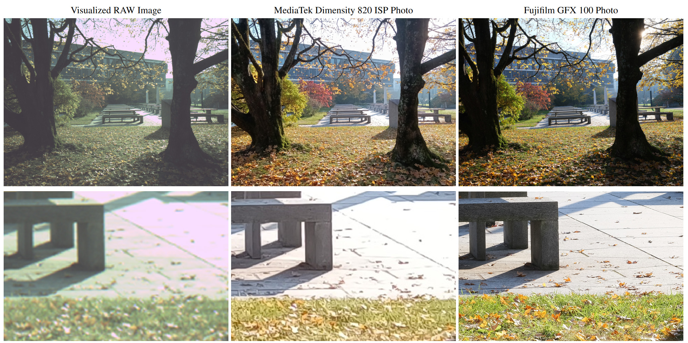
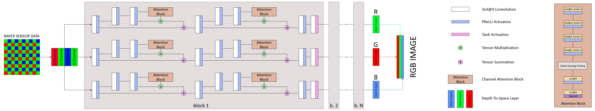
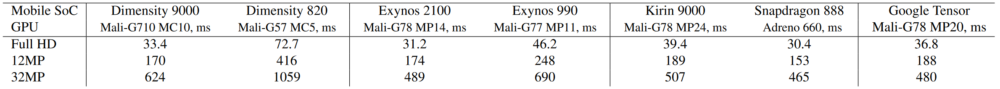

ETH Zurich
Switzerland, 2020-2025
| Andrey Ignatov | Anastasia Sycheva | Radu Timofte | Luc Van Gool |
| ihnatova@ethz.ch | nastya.sycheva89@gmail.com | radu.timofte@uni-wuerzburg.de | vangool@vision.ee.ethz.ch |
Abstract: While neural networks-based photo processing solutions can provide a better image quality compared to the traditional ISP systems, their application to mobile devices is still very limited due to their very high computational complexity. In this paper, we present a novel MicroISP model designed specifically for edge devices, taking into account their computational and memory limitations. The proposed solution is capable of processing up to 32MP photos on recent smartphones using the standard mobile ML libraries and requiring less than 1 second to perform the inference, while for FullHD images it achieves real-time performance. The architecture of the model is flexible, allowing to adjust its complexity to devices of different computational power. To evaluate the performance of the model, we collected a novel Fujifilm UltraISP dataset consisting of thousands of paired photos captured with a normal mobile camera sensor and a professional 102MP medium-format FujiFilm GFX100 camera. The experiments demonstrated that, despite its compact size, the MicroISP model is able to provide comparable or better visual results than the traditional mobile ISP systems, while outperforming the previously proposed efficient deep learning based solutions. Finally, this model is also compatible with the latest mobile AI accelerators, achieving good runtime and low power consumption on smartphone NPUs and APUs.

When dealing with an end-to-end learned smartphone ISP, the quality of the target images used for training the model plays a crucial. As our exploration revealed that none of the currently existing APS-C and full-frame cameras satisfy our quality requirements, we used the Fujifilm GFX100, a medium format 102 MP camera, for capturing the target high-quality photos. To collect the source RAW smartphone images, we chose a popular Sony IMX586 Quad Bayer camera sensor that can be found in tens of mid-range and high-end mobile devices released in the past 3 years. This sensor was mounted on the MediaTek Dimensity 820 development board, and was capturing both raw and processed (by its built-in ISP system) 12MP images. The cameras were capturing photos synchronously to ensure that the image content is identical. This setup was used for several weeks to collect over 6 thousand daytime image pairs at a wide variety of places with different illumination and weather conditions.
As the collected RAW-RGB image pairs were not perfectly aligned, we had to perform local matching first. In order to achieve a precise pixel-wise alignment, we used the SOTA deep learning based dense matching algorithm to extract 256×256 px patches from the original photos. This procedure resulted in over 99K pairs of crops that were divided into training (93.8K), validation (2.2K) and test (3.1K) sets and used for model training and evaluation.

The model accepts the raw RGBG Bayer data coming directly from the camera sensor. The input is then grouped in 4 feature maps corresponding to each of the four RGBG color channels using the space-to-depth op. Next, this input is processed in parallel in 3 model branches corresponding to the R, G and B color channels and consisting of N residual building blocks. After applying the depth-to-space op at the end of each branch, their outputs are concatenated into the reconstructed RGB photo.
The proposed MicroISP model contains only layers supported by the Neural Networks API 1.2, and thus can run on any NNAPI-compliant AI accelerator (such as NPU, APU, DSP or GPU) available on mobile devices with Android 10 and above. The size of the MicroISP network is only 158 KB when exported for inference using the TFLite FP32 format. The model consumes around 90, 475 and 975MB of RAM when processing FullHD, 12MP and 32MP photos on mobile GPUs, respectively. Its GPU runtimes on various platforms for images of different resolutions are provided below:

"MicroISP: Processing 32MP Photos on Mobile Devices with Deep Learning",
In
ETH Zurich
Switzerland, 2020-2025